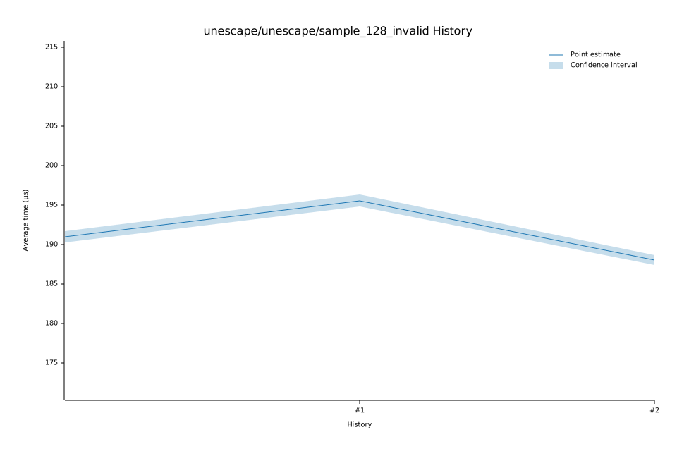

# 42023-01-21T06:20:52-08:00
|
Lower Bound |
Estimate |
Upper Bound |
| Value: |
114.18µs |
118.07µs |
125.68µs |
| Throughput: |
141.12MiB/s |
136.48MiB/s |
128.21MiB/s |
| Change in Value: |
-37.419% |
-36.356% |
-34.802% |
| Change in Throughput: |
+59.794% |
+57.123% |
+53.379% |
No change in performance detected.
# 32023-01-21T06:16:38-08:00
|
Lower Bound |
Estimate |
Upper Bound |
| Value: |
179.06µs |
179.68µs |
180.37µs |
| Throughput: |
89.99MiB/s |
89.68MiB/s |
89.34MiB/s |
| Change in Value: |
-4.9918% |
-4.4348% |
-3.8601% |
| Change in Throughput: |
+5.2540% |
+4.6406% |
+4.0151% |
No change in performance detected.
# 22023-01-21T06:12:06-08:00
|
Lower Bound |
Estimate |
Upper Bound |
| Value: |
187.41µs |
188.00µs |
188.66µs |
| Throughput: |
85.98MiB/s |
85.71MiB/s |
85.41MiB/s |
| Change in Value: |
-4.2543% |
-3.7796% |
-3.3270% |
| Change in Throughput: |
+4.4434% |
+3.9281% |
+3.4415% |
No change in performance detected.
# 12023-01-21T06:07:38-08:00
|
Lower Bound |
Estimate |
Upper Bound |
| Value: |
194.85µs |
195.56µs |
196.34µs |
| Throughput: |
82.69MiB/s |
82.40MiB/s |
82.07MiB/s |
| Change in Value: |
+2.1037% |
+2.5702% |
+3.0230% |
| Change in Throughput: |
-2.0603% |
-2.5058% |
-2.9343% |
No change in performance detected.
# 02023-01-21T06:03:08-08:00
|
Lower Bound |
Estimate |
Upper Bound |
| Value: |
190.26µs |
190.94µs |
191.71µs |
| Throughput: |
84.69MiB/s |
84.39MiB/s |
84.05MiB/s |